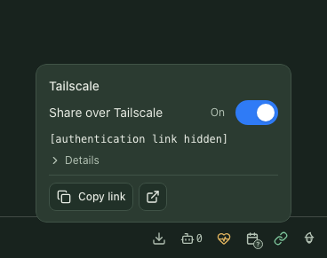
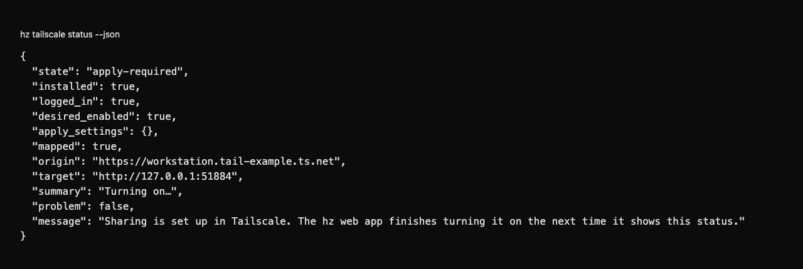
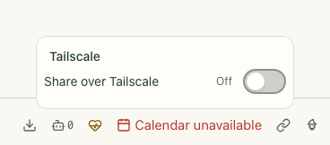
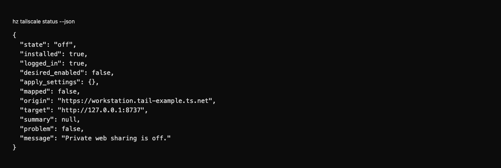

heinzel-tailscale
Isolated demonstration profile · Core 0.9.16 · Review these captures before committing. Click an image to inspect it at full size.

UI · Turn private sharing on; the switch reads On with Copy URL and Open — fictional local Tailscale demo
CLI · Inspect the saved request and mapping from the CLI — fictional local Tailscale demo
UI · Turn private sharing off explicitly — fictional local Tailscale demo
CLI · Inspect the request and mapping after switching off — fictional local Tailscale demo